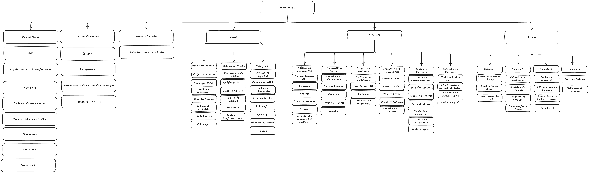

Estrutura Analítica de Produto¶
A EAP representa a decomposição hierárquica do escopo total do trabalho a ser executado pela equipe do projeto a fim de alcançar os objetivos e criar entregas exigidas.

| ID | Componente | Descrição | Dados Técnicos | Comentários |
|---|---|---|---|---|
| 1 | Sub-sistema: Chassi | Desenvolvimento da base física e locomoção do micromouse | ||
| 1.1 | Estrutura Mecânica | Foco no corpo principal e na sustentação base do robô | ||
| 1.1.1 | Projeto conceitual | Definição inicial do formato, dimensões e requisitos do chassi. | ||
| 1.1.2 | Modelagem (CAD) | Criação dos modelos 3D computacionais preliminares da base. | ||
| 1.1.3 | Análise e refinamento | Avaliação do modelo (centro de gravidade, peso, resistência) e ajustes. | ||
| 1.1.4 | Desenho técnico | Geração das plantas 2D com cotas e tolerâncias para manufatura. | ||
| 1.1.5 | Seleção de materiais | Especificação dos insumos da base (ex: acrílico, PLA, etc.). | ||
| 1.1.6 | Prototipagem | Fabricação rápida para validar volume, dimensões e encaixes. | ||
| 1.1.7 | Fabricação | Manufatura definitiva das peças que compõem a carcaça. | ||
| 1.2 | Sistema de Tração | Conjunto responsável por dar movimento ao robô | ||
| 1.2.1 | Dimensionamento mecânico | Cálculos para definir torque, velocidade e tipo de motor. | ||
| 1.2.2 | Modelagem (CAD) | Desenho 3D de rodas, eixos, buchas e suportes para motores. | ||
| 1.2.3 | Desenho técnico | Detalhamento 2D das peças de tração e tolerâncias de encaixe. | ||
| 1.2.4 | Seleção de materiais | Escolha de materiais focados em atrito (pneus) e eixos. | ||
| 1.2.5 | Fabricação | Produção, usinagem ou impressão 3D dos componentes de tração. | ||
| 1.2.6 | Testes de tração/motores | Ensaios de bancada para validar aderência, elétrica e torque. | ||
| 1.3 | Integração | União das partes mecânicas, eletrônica e calibração final | ||
| 1.3.1 | Projeto de suportes | Planejamento da fixação das placas (PCBs), bateria e sensores. | ||
| 1.3.2 | Modelagem (CAD) | Adição dos suportes e volume dos eletrônicos no modelo 3D. | ||
| 1.3.3 | Análise e refinamento | Checagem virtual de estabilidade e posicionamento dos sensores. | ||
| 1.3.4 | Desenho técnico | Planta final das pequenas peças de fixação e apoios de hardware. | ||
| 1.3.5 | Fabricação | Produção das estruturas de suporte, espaçadores e conectores. | ||
| 1.3.6 | Montagem | Acoplamento físico do chassi, motores, bateria, fiação e placas lógicas. | ||
| 1.3.7 | Validação estrutural | Checagem de robustez física para garantir que não há peças soltas. | ||
| 1.3.8 | Testes | Ensaios mecânicos na pista para verificar estabilidade em curvas e retas. | ||
| 2 | Sub-sistema: Fonte Energética | |||
| 2.1 | Alimentação | O sistema deverá fornecer tensão e corrente compatíveis com todos os subsistemas elétricos do robô. | ||
| 2.2 | Capacidade Energética | A fonte energética deverá possuir capacidade suficiente para permitir a execução completa do labirinto sem interrupção por descarga. | ||
| 2.2 | Eletrônica de Potência | O circuito de potência deverá ser capaz de fornecer a corrente necessária aos motores durante acelerações e manobras. | ||
| 3 | Sub-sistema: Hardware | |||
| 3.1 | Seleção de Componentes | |||
| 3.1.1 | Microcontrolador (MCU) | Processar os dados dos sensores e executar o controle do robô. | ||
| 3.1.2 | Sensores de parede/distância | Detectar paredes e fornecer informações para localização e navegação. | ||
| 3.1.3 | Motores | Movimentar as rodas do robô. | ||
| 3.1.4 | Driver de motores | Fornecer a interface de potência para acionamento dos motores. | ||
| 3.1.5 | Encoders | Medir a rotação das rodas e auxiliar no controle de velocidade e deslocamento. | ||
| 3.1.6 | Conectores e componentes auxiliares | Realizar conexões elétricas de forma organizada e confiável. | ||
| 3.2 | Esquemático Elétrico | |||
| 3.2.1 | Alimentação e distribuição | Mapear o circuito para alimentar o sistema e distribuir a energia entre os componentes. | ||
| 3.2.2 | Microcontrolador | Projetar as conexões de pinos, alimentação e interfaces da MCU. | ||
| 3.2.3 | Sensores | Projetar o esquemático das linhas de sinal e alimentação dos sensores de detecção de parede. | ||
| 3.2.4 | Driver de motores e Motores | Projetar as linhas lógicas de controle e potência entre MCU, driver e motores. | ||
| 3.2.5 | Encoders | Projetar as conexões dos sinais de leitura das rodas com as entradas da MCU. | ||
| 3.3 | Projeto e Montagem do Circuito | |||
| 3.3.1 | Montagem do protótipo | Realizar montagem experimental em bancada para validação preliminar do circuito. | ||
| 3.3.2 | Projeto da PCB | Organizar e interligar os circuitos e componentes eletrônicos. | ||
| 3.3.3 | Soldagem | Fixar e conectar fisicamente os componentes à PCB fabricada. | ||
| 3.3.4 | Cabeamento e conectores | Realizar conexões elétricas de forma organizada e confiável. | ||
| 3.4 | Integração dos Componentes | |||
| 3.4.1 | Sensores → MCU | Integrar as linhas de sinal dos sensores às entradas da MCU. | ||
| 3.4.2 | Encoders → MCU | Integrar as saídas de quadratura dos encoders às entradas da MCU. | ||
| 3.4.3 | MCU → Driver | Conectar as saídas de controle da MCU às entradas lógicas do driver. | ||
| 3.4.4 | Driver → Motores | Conectar as saídas de potência do driver aos terminais dos motores. | ||
| 3.4.5 | Alimentação → Sistema | Conectar e distribuir as linhas de alimentação para todos os módulos. | ||
| 3.5 | Testes de Hardware | |||
| 3.5.1 | Teste do microcontrolador | Verificar o funcionamento de clock, gravação de firmware e processamento da MCU. | ||
| 3.5.2 | Teste dos sensores | Verificar a resposta de detecção e a precisão da leitura de distâncias. | ||
| 3.5.3 | Teste dos motores | Verificar a movimentação e rotação dos motores em vazio e com carga. | ||
| 3.5.4 | Teste do driver | Verificar o envio de sinais de potência e chaveamento dos canais. | ||
| 3.5.5 | Teste dos encoders | Verificar a leitura correta de rotação, pulsos e sentido de giro. | ||
| 3.5.6 | Teste de alimentação | Medir estabilidade, tensões reguladas e capacidade de corrente. | ||
| 3.5.7 | Teste integrado | Verificar a operação simultânea de todos os módulos eletrônicos interligados. | ||
| 3.6 | Validação do Hardware | |||
| 3.6.1 | Verificação dos requisitos | Avaliar o atendimento a todas as especificações técnicas estipuladas. | ||
| 3.6.2 | Identificação e correção de falhas | Isolar anomalias operacionais e implementar correções no circuito. | ||
| 3.6.3 | Validação do funcionamento | Homologar o funcionamento geral do conjunto eletrônico montado. | ||
| 3.6.4 | Aprovação para integração com o software | Liberar formalmente a plataforma física para receber o firmware e algoritmos de controle. | ||
| 4 | Releases de Software | |||
| 4.1 | Módulo de Percepção e Mapeamento | |||
| 4.1.1 | Reconhecimento de ambiente | Identificar os diferentes elementos físicos presentes no labirinto, como paredes e piso. Essa etapa de codificação ficará sob sua responsabilidade direta para garantir a correta percepção do espaço. | ||
| 4.1.2 | Construção do mapa | Construir o mapa quadriculado do labirinto baseado no percurso feito pelo micromouse. Essa tarefa também comporá as suas entregas pessoais no desenvolvimento do projeto. | ||
| 4.1.3 | Armazenamento local | Armazenar o mapa quadriculado do labirinto na memória. | ||
| 4.2 | Módulo de Navegação e Controle Autônomo | |||
| 4.2.1 | Odometria e Localização | Identificar a posição atual do micromouse no labirinto. | ||
| 4.2.2 | Algoritmo de Resolução | Tomar decisões de forma unicamente autônoma para percorrer o labirinto da posição inicial à final. | ||
| 4.2.3 | Detecção de Sucesso | Identificar quando o robô alcançou a célula de destino no canto oposto ao início. | ||
| 4.2.4 | Recuperação de falhas | Recuperar o sistema de possíveis colisões, retomando a exploração sem perder o mapeamento e a rota já capturada. | ||
| 4.3 | Módulo de Telemetria e Dashboard | |||
| 4.3.1 | Captura e Transmissão | Exibir dados de telemetria em tempo real. A atualização na interface web deve ocorrer em até 2 segundos após a leitura do sensor. | ||
| 4.3.2 | Estabilização de Conexão | Implementar um buffer para garantir que não haverá perda de dados em caso de interrupções na conexão. | ||
| 4.3.3 | Persistência de Dados e Corridas | Armazenar dados de telemetria e registrar cada tentativa de resolução no banco de dados com um identificador único, permitindo filtragem pelo tipo de labirinto. | ||
| 4.3.4 | Interface Visual (Dashboard) | Renderizar uma interface contendo o mapa bidimensional, trajeto, velocidade média e consumo de bateria. Também deve exibir o percurso feito e os dados de todos os labirintos já percorridos. | ||
| 4.4 | Módulo de Inicialização | |||
| 4.4.1 | Boot do Sistema | O software deve inicializar e estar pronto para o desafio em até 2 segundos. | ||
| 4.4.2 | Calibração de Hardware | Executar uma rotina de autocalibração dos sensores mecânicos, inerciais e de distância em até 1 segundo antes de iniciar o deslocamento. |